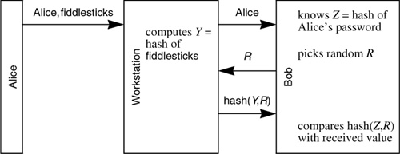

Networking Security Networking Security Networking Security Security Networking Security Networking Security Networking Charlie Kaufman Radia Perlman Mike Speciner Prentice Hall Network Security: Private Communication in a Public World, Second Edition
9.10. Homework
| 1. | As stated in §9.2 Address-Based Authentication, UNIX requires a request from system A for a resource at B to explicitly state the desired account name at B if it is not identical to the account name at A. Why do you suppose it makes that requirement? How would one implement this feature without the requirement?
| | 2. | In §9.6 Eavesdropping and Server Database Reading we asserted that it is extremely difficult, without public key cryptography, to have an authentication scheme which protects against both eavesdropping and server database disclosure. Consider the following authentication protocol (which is based on Novell version 3 security). Alice knows a password. Bob, a server that will authenticate Alice, stores a hash of Alice's password. Alice types her password (say fiddlesticks) to her workstation. The following exchange takes place:

|
Is this an example of an authentication scheme that isn't based on public key cryptography and yet guards against both eavesdropping and server database disclosure?
| | 3. | Extend the scenario in §9.7.4.1 Multiple KDC Domains to a chain of three KDCs. In other words, assume that Alice wants to talk to Boris through a chain of three KDCs (Alice's KDC, a KDC that has shared keys with both Alice's KDC and Boris's KDC, and finally, Boris's KDC). Give the sequence of events necessary to establish communication.
|
|